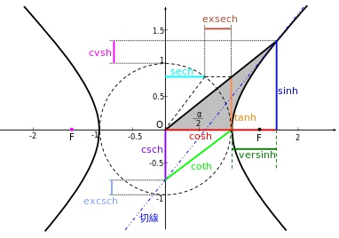
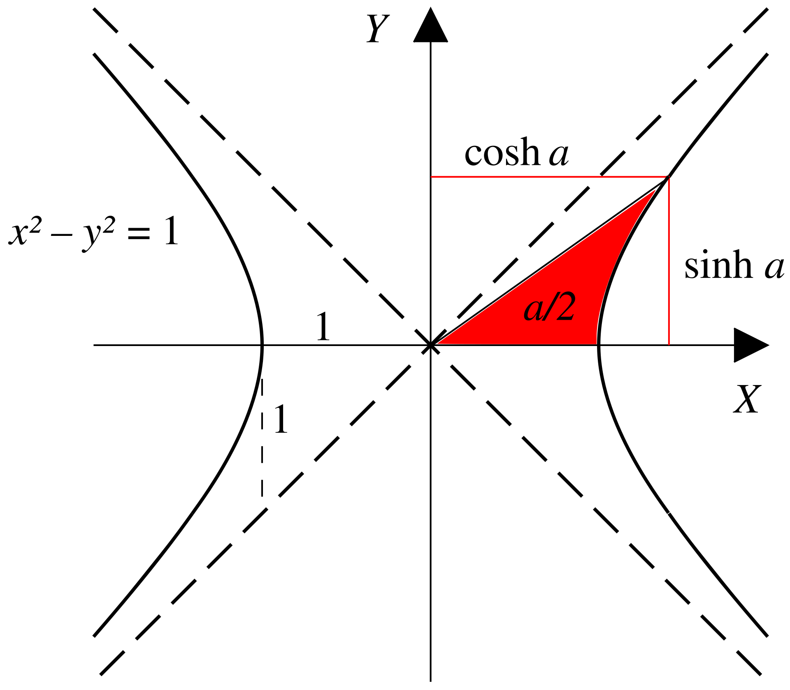

<meta data-alternate="https://freshmark.sunisalex.org/en/posts/math/LYW-math-lessons-review/001/" data-article="true" data-canonical="https://freshmark.sunisalex.org/posts/math/LYW-math-lessons-review/001/" data-description="写给好奇者的笔记。" data-freshmark-page data-title="课堂复盘1 — Freshmark"><main><header class="container article-header"><a href="/" class="back-link">← 返回全部文章</a><p class="eyebrow article-subject">draft</p><h1>课堂复盘1</h1><p class="article-dek"></p><div class="article-meta"><time datetime="2026-06-05">2026年6月5日</time><span>4 分钟阅读</span><span>draft</span><span class="view-count" data-article-view-count hidden>本文访问量 <strong data-article-views></strong></span><a href="index.md" download>下载 Markdown</a><button type="button" class="article-share" data-share-article data-share-text="" data-share-title="课堂复盘1"><span data-share-label>分享文章</span></button><output aria-live="polite" class="visually-hidden" data-share-status role="status"></output></div></header><div class="article-wrap"><aside class="toc"><div class="toc-head"><p>本文目录</p><button type="button" class="toc-toggle" aria-expanded="false" aria-label="展开或收起目录" data-toc-toggle><span class="toc-toggle-label">目录</span><span class="toc-toggle-icon" aria-hidden="true"></span></button></div><nav aria-label="目录" class="toc-links" data-toc-links><a href="#例1解析代数" class="toc-level-3">例1:解析代数</a><a href="#数学背景双曲三角函数" class="toc-level-2">数学背景:双曲三角函数</a><a href="#例2" class="toc-level-3">例2</a><a href="#例3" class="toc-level-3">例3</a></nav></aside><article class="prose"><!--more--><h3 id="例1解析代数">例1:解析代数</h3><p>已知椭圆<span class="math-expression math-inline" data-math-source="C:\frac{x^2}{4}+\frac{y^2}{3}=1"></span>,函数<span class="math-expression math-inline" data-math-source="y=m^{x+1}+n(m\ge 2)"></span>交椭圆于<span class="math-expression math-inline" data-math-source="A,B"></span>两点，求<span class="math-expression math-inline" data-math-source="n"></span>的最大值。</p><p>设<span class="math-expression math-inline" data-math-source="A(x_0,y_0),B(-x_0,-y_0),x_0\in(0,2),y_0\in(0,\sqrt{3})"></span>，有： <span class="math-expression math-display" data-math-source="\begin{cases} y_0=m^{x_0+1}+n,(1)\\ -y_0=m^{-x_0+1}+n,(2)\\ \frac{x_0^2}{4}+\frac{y_0^2}{3}=1,(3) \end{cases}" data-math-display></span> 考虑到一共有<span class="math-expression math-inline" data-math-source="x_0,y_0,m,n"></span>四个变量，以及三个约束条件，故有<span class="math-expression math-inline" data-math-source="4-3=1"></span>个自由度.</p><p>显然如果可以确定其中一个变量的范围，其他变量的范围便迎刃而解:</p><p>为了在得到<strong>恒等变形</strong>的同时<strong>利用对称性</strong>，考虑(1)+(2)和(1)-(2)，则<strong>充要条件</strong>为:</p><p><span class="math-expression math-display" data-math-source="\begin{cases} -2n=m(m^{x_0}+m^{-x_0}),(4)\\ 2y_0=m(m^{x_0}-m^{-x_0}),(5)\\ \frac{x_0^2}{4}+\frac{y_0^2}{3}=1,(3) \end{cases}" data-math-display></span></p><p>做几个简单的观察:</p><ul><li>由(4)不难看出<span class="math-expression math-inline" data-math-source="n\lt 0"></span>.</li><li>在(4)中,<span class="math-expression math-inline" data-math-source="m^{x_0}\gt 1"></span>,则<span class="math-expression math-inline" data-math-source="m"></span>越大,<span class="math-expression math-inline" data-math-source="-2n"></span>越小,<span class="math-expression math-inline" data-math-source="n"></span>越大</li><li>(5)中m越大，2y_0越小，且<span class="math-expression math-inline" data-math-source="m\ge 2"></span>,通过放缩可以消去<span class="math-expression math-inline" data-math-source="m"></span></li></ul><p>于是，我们进一步进行<strong>无损放缩</strong>(m=2):</p><p><span class="math-expression math-display" data-math-source="\begin{cases} -2n\ge 2(2^{x_0}+2^{-x_0}),(6)\\ 2y_0\ge 2(2^{x_0}-2^{-x_0}),(7)\\ \frac{x_0^2}{4}+\frac{y_0^2}{3}=1\ge \frac{x_0^2}{4}+\frac{2^{2x_0}+2^{-2x_0}-2}{3},(\alpha) \end{cases}" data-math-display></span></p><p>(<span class="math-expression math-inline" data-math-source="\alpha"></span>)正是解题的关键！不难看出<span class="math-expression math-inline" data-math-source="\frac{x_0^2}{4}+\frac{2^{2x_0}+2^{-2x_0}-2}{3}"></span>关于<span class="math-expression math-inline" data-math-source="x_0"></span>单调递增，解得<span class="math-expression math-inline" data-math-source="x_0\le 1"></span>.</p><p>于是根据(6)有:</p><p><span class="math-expression math-display" data-math-source="\begin{gathered} n\le -(2^{x_0}+2^{-x_0})\le -\frac{5}{2} \end{gathered}" data-math-display></span></p><p><strong>更正与另解（Claude 补充）</strong></p><blockquote><p>本节由 Claude（Anthropic 开发的 AI 模型）补充，附在作者解答之后，并非原作者所写。</p></blockquote><p>上式最后一步需要 <span class="math-expression math-inline" data-math-source="2^{x_0}+2^{-x_0}\ge\frac52"></span>，即 <span class="math-expression math-inline" data-math-source="x_0\ge1"></span>；但前面由（<span class="math-expression math-inline" data-math-source="\alpha"></span>）推出的是 <span class="math-expression math-inline" data-math-source="x_0\le1"></span>，方向相反。<span class="math-expression math-inline" data-math-source="n"></span>&#32;的最大值确实是 <span class="math-expression math-inline" data-math-source="-\frac52"></span>（<span class="math-expression math-inline" data-math-source="m=2"></span>、<span class="math-expression math-inline" data-math-source="x_0=1"></span>&#32;时取到），只是要换一种收尾方式。正如作者在后文提示的，可以把（4）（5）平方后相减：</p><p><span class="math-expression math-display" data-math-source="(-2n)^2-(2y_0)^2=m^2\Bigl[(m^{x_0}+m^{-x_0})^2-(m^{x_0}-m^{-x_0})^2\Bigr]=4m^2
\quad\Longrightarrow\quad n^2=m^2+y_0^2 ." data-math-display></span></p><p>作者的（<span class="math-expression math-inline" data-math-source="\alpha"></span>）对所有 <span class="math-expression math-inline" data-math-source="m\ge2"></span>&#32;都给出 <span class="math-expression math-inline" data-math-source="x_0\le1"></span>，于是 <span class="math-expression math-inline" data-math-source="y_0=\sqrt3\sqrt{1-\frac{x_0^2}{4}}\ge\sqrt3\cdot\frac{\sqrt3}{2}=\frac32"></span>。又 <span class="math-expression math-inline" data-math-source="n&lt;0"></span>，所以</p><p><span class="math-expression math-display" data-math-source="n=-\sqrt{m^2+y_0^2}\le-\sqrt{4+\tfrac94}=-\frac52," data-math-display></span></p><p>当且仅当 <span class="math-expression math-inline" data-math-source="m=2,\ x_0=1,\ y_0=\frac32"></span>&#32;时取等。我也用数值求解核对过：<span class="math-expression math-inline" data-math-source="m"></span>&#32;从 <span class="math-expression math-inline" data-math-source="2"></span>&#32;增大时 <span class="math-expression math-inline" data-math-source="n"></span>&#32;单调减小。</p><h2 id="数学背景双曲三角函数">数学背景:双曲三角函数</h2><p><picture class="responsive-picture"><source srcset="image.freshmark-cb013373661f-382w.avif 382w" type="image/avif"><source srcset="image.freshmark-cb013373661f-382w.webp 382w" type="image/webp"></picture></p><p><picture class="responsive-picture"><source srcset="image-1.freshmark-0c519359f0c7-480w.avif 480w, image-1.freshmark-0c519359f0c7-960w.avif 960w, image-1.freshmark-0c519359f0c7-1440w.avif 1440w" type="image/avif"><source srcset="image-1.freshmark-0c519359f0c7-480w.webp 480w, image-1.freshmark-0c519359f0c7-960w.webp 960w, image-1.freshmark-0c519359f0c7-1440w.webp 1440w" type="image/webp"></picture></p><p>双曲三角函数由双曲线<span class="math-expression math-inline" data-math-source="x^2-y^2=1"></span>导出，故称为<strong>双曲函数</strong></p><p><span class="math-expression math-display" data-math-source="\begin{cases} \sinh x=\frac{e^x-e^{-x}}{2},\\ \cosh x=\frac{e^x+e^{-x}}{2}\ge 1,\\ \tanh x=\frac{\sinh x}{\cosh x}=\frac{e^x-e^{-x}}{e^x+e^{-x}}=\frac{e^{2x}-1}{e^{2x}+1}\lt 1 \end{cases}" data-math-display></span></p><p>类似于三角函数，双曲函数有对应的恒等变换公式:</p><p><span class="math-expression math-display" data-math-source="\begin{gathered} \cosh^2 x-\sinh^2 x=1,\\ \cosh^2 x+\sinh^2 x=\cosh 2x,\\ \sinh(x+y)=\sinh x\cosh y+\cosh x\sinh y\\ \sinh(x-y)=\sinh x\cosh y-\cosh x\sinh y\\ \cosh(x+y)=\cosh x\cosh y+\sinh x\sinh y\\ \cosh(x-y)=\cosh x\cosh y-\sinh x\sinh y\\ \tanh(x+y)=\frac{\tanh x+\tanh y}{1+\tanh x\tanh y}\\ \tanh(x-y)=\frac{\tanh x-\tanh y}{1-\tanh x\tanh y}\\ \end{gathered}" data-math-display></span></p><p>详细内容见<a href="https://zh.wikipedia.org/wiki/%E5%8F%8C%E6%9B%B2%E5%87%BD%E6%95%B0">维基百科</a></p><p>处理例一(4)(5)时，也可以类比<span class="math-expression math-inline" data-math-source="\cosh^2 x-\sinh^2 x=1"></span>,考虑平方再相加</p><h3 id="例2">例2</h3><p>若<span class="math-expression math-inline" data-math-source="f(x)=a^{x-1}"></span>和<span class="math-expression math-inline" data-math-source="g(x)=\log_a x+1"></span>有三个交点，求<span class="math-expression math-inline" data-math-source="a"></span>的取值范围:</p><p>当<span class="math-expression math-inline" data-math-source="a\gt 1"></span>时，<span class="math-expression math-inline" data-math-source="f(x)=a^{x-1}"></span>单调递增，且<span class="math-expression math-inline" data-math-source="f(x),g(x)"></span>互为反函数，那么假如交点不在<span class="math-expression math-inline" data-math-source="y=x"></span>上:</p><p>设交点为<span class="math-expression math-inline" data-math-source="(x,y)"></span>,则必有成对的交点<span class="math-expression math-inline" data-math-source="(y,x)"></span>,只要<span class="math-expression math-inline" data-math-source="x\neq y"></span>,则与单调性矛盾.</p><p>这意味着<span class="math-expression math-inline" data-math-source="y=a^{x-1}"></span>作为一个下凸函数与<span class="math-expression math-inline" data-math-source="y=x"></span>有两个交点，显然推出矛盾:</p><p>故<span class="math-expression math-inline" data-math-source="0\lt a\lt 1"></span>,此时显然有一个交点<span class="math-expression math-inline" data-math-source="(1,1)"></span>，而另外两个交点都不能在<span class="math-expression math-inline" data-math-source="y=x"></span>上，则两个配对的交点都不在<span class="math-expression math-inline" data-math-source="y=x"></span>上，有一对<span class="math-expression math-inline" data-math-source="(x,y),(y,x)"></span>为符合题意的交点:</p><p><span class="math-expression math-display" data-math-source="\begin{cases} a^{x-1}=y,(1)\\ a^{y-1}=x,(2) \end{cases}" data-math-display></span></p><p><span class="math-expression math-display" data-math-source="\begin{gathered} a^{x-1}+a^{y-1}=x+y,\\ a^{x-1}-a^{y-1}=y-x \end{gathered}" data-math-display></span></p><p>令<span class="math-expression math-inline" data-math-source="k=\ln a\lt 0,x-1=u,y-1=v"></span>,则:</p><p><span class="math-expression math-display" data-math-source="\begin{gathered} e^{ku}+e^{kv}=u+v+2,(3)\\ e^{ku}-e^{kv}=v-u,(4) \end{gathered}" data-math-display></span></p><p>再令<span class="math-expression math-inline" data-math-source="u+v=S,u-v=D"></span></p><p><span class="math-expression math-display" data-math-source="\begin{cases} e^{\frac{kS}{2}}(e^{\frac{kD}{2}}+e^{-\frac{kD}{2}})=S+2,(5)\\ e^{\frac{kS}{2}}(e^{\frac{kD}{2}}-e^{-\frac{kD}{2}})=-D,(6) \end{cases}" data-math-display></span></p><p>(5)/(6)得：</p><p><span class="math-expression math-display" data-math-source="\boxed{\tanh(\frac{kD}{2})=-\frac{D}{S+2}}" data-math-display></span></p><p>以上是<span class="math-expression math-inline" data-math-source="x,y"></span>存在满足的必要条件.</p><p><picture class="responsive-picture"><source srcset="image-2.freshmark-196a4ca1e66c-480w.avif 480w, image-2.freshmark-196a4ca1e66c-960w.avif 960w, image-2.freshmark-196a4ca1e66c-1440w.avif 1440w" type="image/avif"><source srcset="image-2.freshmark-196a4ca1e66c-480w.webp 480w, image-2.freshmark-196a4ca1e66c-960w.webp 960w, image-2.freshmark-196a4ca1e66c-1440w.webp 1440w" type="image/webp"></picture></p><p>当<span class="math-expression math-inline" data-math-source="S"></span>固定时,<span class="math-expression math-inline" data-math-source="y=-\frac{1}{S+2}D"></span>是一条直线,考虑它与<span class="math-expression math-inline" data-math-source="y=\tanh(\frac{kD}{2})"></span>有三个交点.</p><p>显然,由图像可知,<span class="math-expression math-inline" data-math-source="y=\tanh \frac{kD}{2}"></span>在<span class="math-expression math-inline" data-math-source="D=0"></span>处的斜率为<span class="math-expression math-inline" data-math-source="\frac{k}{2}"></span>.</p><p>那么如果<span class="math-expression math-inline" data-math-source="-\frac{1}{S+2}\gt \frac{k}{2}"></span>,则直线与双曲正切函数会有三个交点.</p><p>如果<span class="math-expression math-inline" data-math-source="-\frac{1}{S+2}\le \frac{k}{2}"></span>,则直线与双曲正切函数只有一个交点.</p><p>由(3):</p><p><span class="math-expression math-display" data-math-source="\begin{gathered} S+2=e^{ku}+e^{kv}\ge 2e^{k\frac{S}{2}} \end{gathered}" data-math-display></span></p><p>如果<span class="math-expression math-inline" data-math-source="S\lt 0"></span>,则<span class="math-expression math-inline" data-math-source="2\gt S+2\ge 2e^{k\frac{S}{2}}\gt 2"></span>,导致矛盾.</p><p>所以<span class="math-expression math-inline" data-math-source="S\ge 0"></span>.</p><p>临界条件<span class="math-expression math-inline" data-math-source="S\to 0,k\to -1,a\to \frac{1}{e}"></span></p><p>把&quot;在 <span class="math-expression math-inline" data-math-source="S\to0"></span>&#32;比斜率&quot;换成一个<strong>单变量、全局</strong>的论证,彻底绕开两个未知量纠缠的麻烦。最干净的是回到不动点语言。</p><p>设 <span class="math-expression math-inline" data-math-source="f(x)=a^{x-1}"></span>(<span class="math-expression math-inline" data-math-source="0&lt;a&lt;1"></span>),轴外对就是 <span class="math-expression math-inline" data-math-source="g(x)=f(f(x))"></span>&#32;除 <span class="math-expression math-inline" data-math-source="x=1"></span>&#32;外的不动点。考察</p><p><span class="math-expression math-display" data-math-source="\psi(x)=f(f(x))-x,\qquad \psi(1)=0." data-math-display></span></p><p><strong>第一步:<span class="math-expression math-inline" data-math-source="\psi"></span>&#32;至多 3 个零点。</strong> 算导数,记 <span class="math-expression math-inline" data-math-source="w(x)=f(x)+x-2"></span>,则</p><p><span class="math-expression math-display" data-math-source="\psi&#39;(x)=f&#39;(f(x))f&#39;(x)-1=(\ln a)^2\,a^{\,w(x)}-1." data-math-display></span></p><p>而 <span class="math-expression math-inline" data-math-source="w&#39;(x)=a^{x-1}\ln a+1"></span>&#32;严格增(因 <span class="math-expression math-inline" data-math-source="a^{x-1}\ln a"></span>&#32;增),故 <span class="math-expression math-inline" data-math-source="w"></span>&#32;是先减后增的下凸函数,有唯一极小;于是 <span class="math-expression math-inline" data-math-source="a^{w(x)}"></span>(底数 <span class="math-expression math-inline" data-math-source="&lt;1"></span>)是先增后减的&quot;单峰&quot;,<span class="math-expression math-inline" data-math-source="\psi&#39;"></span>&#32;也单峰:在 <span class="math-expression math-inline" data-math-source="\pm\infty"></span>&#32;处趋于 <span class="math-expression math-inline" data-math-source="-1"></span>,中间可能抬到正值。这意味着 <span class="math-expression math-inline" data-math-source="\psi&#39;"></span>&#32;至多变号两次,<span class="math-expression math-inline" data-math-source="\psi"></span>&#32;形如&quot;减→增→减&quot;,<strong>至多 3 个零点</strong>。再加上反函数对称性,非平凡零点只能成对出现,所以轴外对<strong>至多一对</strong>。</p><p><strong>第二步:门槛恰是 <span class="math-expression math-inline" data-math-source="\psi&#39;(1)=0"></span>。</strong> 在已知零点 <span class="math-expression math-inline" data-math-source="x=1"></span>&#32;处,</p><p><span class="math-expression math-display" data-math-source="\psi&#39;(1)=f&#39;(1)^2-1=(\ln a)^2-1." data-math-display></span></p><ul><li>若 <span class="math-expression math-inline" data-math-source="(\ln a)^2\le1"></span>(即 <span class="math-expression math-inline" data-math-source="a\ge\frac1e"></span>):则 <span class="math-expression math-inline" data-math-source="\psi&#39;(1)\le0"></span>。结合单峰结构可验证 <span class="math-expression math-inline" data-math-source="\psi"></span>&#32;在 <span class="math-expression math-inline" data-math-source="x=1"></span>&#32;两侧不再穿过零(它在 <span class="math-expression math-inline" data-math-source="1"></span>&#32;处下穿,且两端也朝 <span class="math-expression math-inline" data-math-source="-"></span>,中间的正峰若存在也够不到产生新交点),故<strong>只有 <span class="math-expression math-inline" data-math-source="x=1"></span>&#32;一个零点</strong>,仅一个交点。</li><li>若 <span class="math-expression math-inline" data-math-source="(\ln a)^2&gt;1"></span>(即 <span class="math-expression math-inline" data-math-source="a&lt;\frac1e"></span>,因 <span class="math-expression math-inline" data-math-source="\ln a&lt;0"></span>&#32;即 <span class="math-expression math-inline" data-math-source="\ln a&lt;-1"></span>):则 <span class="math-expression math-inline" data-math-source="\psi&#39;(1)&gt;0"></span>,<span class="math-expression math-inline" data-math-source="\psi"></span>&#32;在 <span class="math-expression math-inline" data-math-source="x=1"></span>&#32;处<strong>上穿</strong>零点。但 <span class="math-expression math-inline" data-math-source="\psi(x)\to+\infty\ (x\to-\infty)"></span>、<span class="math-expression math-inline" data-math-source="\psi(x)\to-\infty\ (x\to+\infty)"></span>(用 <span class="math-expression math-inline" data-math-source="0&lt;a&lt;1"></span>&#32;直接验两端极限),配合单峰导致的&quot;减增减&quot;形状,<span class="math-expression math-inline" data-math-source="x=1"></span>&#32;两侧<strong>各逼出一个新零点</strong>,恰好一对轴外解。</li></ul><p><strong>第三步:连续性收口(取代你的 <span class="math-expression math-inline" data-math-source="S\to0"></span>)。</strong> 第二步已是充要,但若想说清&quot;这对解为何在 <span class="math-expression math-inline" data-math-source="a=\frac1e"></span>&#32;处诞生&quot;:由 <span class="math-expression math-inline" data-math-source="\psi&#39;(1)=(\ln a)^2-1"></span>&#32;随 <span class="math-expression math-inline" data-math-source="a"></span>&#32;连续,当 <span class="math-expression math-inline" data-math-source="a\uparrow\frac1e"></span>&#32;时 <span class="math-expression math-inline" data-math-source="\psi&#39;(1)\downarrow0"></span>,那对零点连续地并入 <span class="math-expression math-inline" data-math-source="x=1"></span>(即 <span class="math-expression math-inline" data-math-source="D\to0"></span>)。这才是&quot;<span class="math-expression math-inline" data-math-source="S\to0"></span>&quot;现象的正确出处——它是<strong>结论的极限行为</strong>,不是用来当<strong>前提</strong>的判据。</p><p>于是充要地:</p><p><span class="math-expression math-display" data-math-source="\text{三个交点}\iff(\ln a)^2&gt;1\ \text{且}\ 0&lt;a&lt;1\iff \boxed{0&lt;a&lt;\tfrac1e}." data-math-display></span></p><h3 id="例3">例3</h3><p>(2021清华强基)定义<span class="math-expression math-inline" data-math-source="x*y=\frac{x+y}{1+xy}"></span>,则<span class="math-expression math-inline" data-math-source="(...(2*3)*4)...)*21="></span>__.</p><p>不难看出此题的背景是双曲正切函数.</p><p>令<span class="math-expression math-inline" data-math-source="x=\frac{u-1}{u+1},y=\frac{v-1}{v+1},x*y=\frac{uv-1}{uv+1}"></span>,其中:</p><p><span class="math-expression math-display" data-math-source="\begin{cases} u=-\frac{x+1}{x-1},\\ v=-\frac{y+1}{y-1} \end{cases}" data-math-display></span></p><p>记<span class="math-expression math-inline" data-math-source="g(x)=-\frac{x+1}{x-1}"></span>,则:</p><p><span class="math-expression math-display" data-math-source="\begin{gathered} (x*y)*z=(\frac{g(x)g(y)-1}{g(x)g(y)+1})*z=\frac{g(x)g(y)g(z)-1}{g(x)g(y)g(z)+1} \end{gathered}" data-math-display></span> <span class="math-expression math-display" data-math-source="(...(2*3)*4)...)*21=\frac{g(2)g(3)...g(21)-1}{g(2)g(3)...g(21)+1}" data-math-display></span> 其中<span class="math-expression math-inline" data-math-source="g(2)g(3)g(4)...g(21)=\frac{-3}{1}\frac{-4}{2}\frac{-5}{3}...\frac{-22}{20}=\frac{21\times22}{1\times2}=231"></span></p><p>所求<span class="math-expression math-inline" data-math-source="=\frac{230}{232}=\frac{115}{116}"></span></p></article></div><section class="container comments" data-comments data-comments-path="/posts/math/LYW-math-lessons-review/001/"><div class="comments-head"><div><p class="eyebrow">评论</p><h2 data-comments-title>评论</h2></div><p>登录后参与讨论。注册时只需验证一次邮箱。</p></div><div class="comment-list" aria-live="polite" data-comment-list><p class="comment-state" data-comment-state>正在加载评论…</p></div><button type="button" class="comment-more" data-comments-more hidden>加载更早的评论</button><div class="comment-auth" data-comment-auth><p class="comment-auth-status" data-auth-loading>正在检查登录状态…</p><div hidden data-auth-guest><form class="comment-auth-form" data-auth-login><h3>登录后评论</h3><label>邮箱<input autocomplete="email" name="email" maxlength="254" required type="email"></label><label>密码<input autocomplete="current-password" name="password" maxlength="128" required type="password"></label><div class="comment-form-foot"><p class="comment-form-status" role="status" data-auth-login-status></p><button type="submit">登录</button></div></form><details class="comment-register"><summary>还没有账号？注册</summary><form class="comment-auth-form" data-auth-register><label>昵称<input autocomplete="name" name="name" maxlength="40" required></label><label>邮箱<input autocomplete="email" name="email" maxlength="254" required type="email"></label><label>密码<input autocomplete="new-password" name="password" maxlength="128" required type="password" minlength="8"></label><p class="comment-auth-hint">至少 8 个字符。</p><div class="comment-form-foot"><p class="comment-form-status" role="status" data-auth-register-status></p><button type="submit">注册</button></div></form></details></div><form class="comment-auth-form" hidden data-auth-verify><p>验证码已发送到邮箱，请在 10 分钟内完成注册。</p><label>六位验证码<input autocomplete="one-time-code" name="code" maxlength="6" required minlength="6" inputmode="numeric" pattern="[0-9]{6}"></label><div class="comment-form-foot"><p class="comment-form-status" role="status" data-auth-verify-status></p><button type="submit">完成注册</button></div></form><div class="comment-auth-user" data-auth-user hidden><p>当前登录： <strong data-auth-user-name></strong> <span data-auth-user-email></span></p><button type="button" data-auth-logout>退出登录</button></div></div><form class="comment-form" hidden data-comment-form><label>评论内容<textarea maxlength="2000" minlength="2" name="body" placeholder="写下你的想法…" required rows="5"></textarea></label><p class="comment-markdown-hint">支持 Markdown：加粗、链接、引用、列表和代码。</p><label aria-hidden="true" class="comment-honeypot">Website<input autocomplete="off" name="website" tabindex="-1"></label><div class="comment-form-foot"><p class="comment-form-status" role="status" data-comment-form-status></p><button type="submit" data-comment-submit>发表评论</button></div></form></section></main>